Überblick › LB 2/3 Programmieren und Algorithmen
2.1.8 Versionen verwalten mit Git
sortieren.py, sortieren_neu.py, sortieren_neu_FINAL.py, sortieren_neu_FINAL2.py – kommt dir das bekannt vor? Spätestens nach einer Woche weiß niemand mehr, welche Datei welche Änderung enthält und welche Fassung eigentlich funktioniert hat. Eine Versionsverwaltung löst dieses Problem: Sie speichert jede Fassung deiner Dateien mit Datum und Begründung und kann jede frühere Fassung wieder hervorholen. Das verbreitetste Werkzeug dafür heißt Git.
Wir nutzen dafür den Git-Server git.inf7.eu, einen „Git-Server für den Informatikunterricht“. Er läuft mit der freien Software Forgejo und wird vom Verein Neue Informatik e.V. betrieben. Du arbeitest dort zunächst nur im Browser, eine Installation ist nicht nötig. Deine Python-Programme schreibst du wie bisher in Thonny oder im JupyterLite (jupyterlite.inf7.eu) und legst sie anschließend in deinem Repository ab.
So benutzt du diese Anleitung: Die Bilder sind echte Bildschirmfotos von git.inf7.eu (Forgejo, Version 16.0.5, deutsche Oberfläche). Das Beispiel-Repository auf den Bildern heißt test-anleitung, deines heißt informatik-11. Wo auf den Bildern der Benutzername der Lehrkraft steht, steht bei dir dein Benutzername. Einige wenige Beschriftungen sind englisch geblieben (z. B. „Continue with beste.schule“, „Copy link“, „Search“). Arbeite die Schritte beim ersten Mal der Reihe nach durch, später dient die Seite zum Nachschlagen.
Inhalt dieser Seite
- Warum Versionsverwaltung? und Die wichtigsten Begriffe
- Schritt 1: Anmelden
- Schritt 2: Dein Repository anlegen
- Schritt 3: Die Repository-Seite kennenlernen
- Schritt 4: Eine Datei hochladen und committen
- Schritt 5: Eine Datei ansehen – Originalformat, Permalink, Blame, Verlauf
- Schritt 6: Versionen vergleichen
- Schritt 7: Im Browser bearbeiten – die README in Markdown
- Schritt 8: Alte Stände ansehen und zurückholen
- Schritt 9: Herunterladen und Klonen
- Schritt 10: Die Lehrkraft einladen (falls verlangt)
- Gute Commit-Nachrichten, Was nicht ins Repository gehört, Häufige Fehler und Fragen
- Beispiele, Aufgaben, Übung und Vertiefung
Warum Versionsverwaltung?
- Nichts geht verloren: Jede gespeicherte Fassung bleibt erhalten. Ein misslungener Umbau lässt sich zurücknehmen.
- Nachvollziehbarkeit: Zu jeder Änderung steht fest, wann sie gemacht wurde und warum.
- Vergleichbarkeit: Zwei Fassungen lassen sich Zeile für Zeile vergleichen. So findest du schnell heraus, welche Änderung einen Fehler verursacht hat.
- Dokumentation von Experimenten: Wer Programme schrittweise verbessert und misst (siehe 2.2.3), hält in der Historie Code und Messergebnis zusammen fest.
- Zusammenarbeit: Im Team arbeiten mehrere Personen an denselben Dateien. Das nutzt du später im Projekt (Lernbereich 5); zunächst arbeitest du allein in deinem eigenen Repository.
Die wichtigsten Begriffe
Ein Commit ist mehr als „Speichern“: Beim Speichern in Thonny wird die alte Fassung überschrieben. Ein Commit legt dagegen einen zusätzlichen Stand an, und alle früheren bleiben abrufbar. Wichtig: Was einmal committet wurde, steht in der Historie – auch dann, wenn die Datei in einem späteren Commit gelöscht wird.
Schritt 1: Anmelden
Du brauchst kein neues Konto. Die Anmeldung läuft über deinen Zugang zu beste.schule. Technisch gibt es dafür eine zentrale Anmeldeseite unter auth.inf7.eu, die dich an beste.schule weiterleitet. Das sieht nach vielen Seiten aus, dauert aber nur wenige Klicks.
- Startseite öffnen. Gib in die Adresszeile
git.inf7.euein. Du siehst die Startseite mit der Überschrift „Git-Server für den Informatikunterricht“. Klicke oben rechts auf „Anmelden“.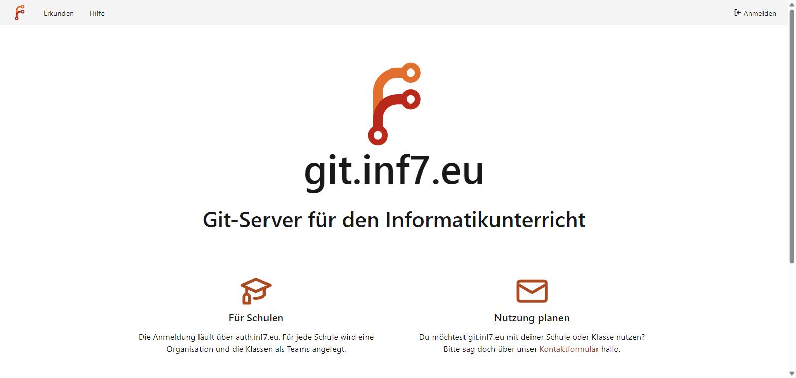
Bild 1: Die Startseite. Unten steht: „Für jede Schule wird eine Organisation und die Klassen als Teams angelegt.“ Oben rechts: „Anmelden“. - „Anmelden mit inf7.eu“ wählen. Es öffnet sich eine Seite mit den Feldern „Benutzername oder E-Mail-Adresse“ und „Passwort“. Diese Felder benutzt du nicht, denn du hast auf git.inf7.eu kein eigenes Passwort. Klicke stattdessen unten auf die graue Schaltfläche „Anmelden mit inf7.eu“.

Bild 2: Die Anmeldeseite von Forgejo. Richtig ist die untere Schaltfläche „Anmelden mit inf7.eu“. In der Fußzeile siehst du die Forgejo-Version und den Betreiber. - „Continue with beste.schule“ wählen. Du landest auf
auth.inf7.eu(„Willkommen auf auth.inf7.eu!“). Das Feld „E-Mail oder Anmeldename“ lässt du leer. Klicke auf die untere blaue Schaltfläche „Continue with beste.schule“ (auf Deutsch: „Weiter mit beste.schule“).
Bild 3: Die zentrale Anmeldeseite auth.inf7.eu. Schülerinnen und Schüler nehmen „Continue with beste.schule“. - Bei beste.schule anmelden. Jetzt erscheint die bekannte Anmeldeseite von beste.schule. Gib deinen Benutzernamen (oder deine E-Mail-Adresse) und dein Passwort von beste.schule ein und klicke auf „Anmelden“. Die Schaltflächen „mit VIDIS anmelden“ bzw. „mit Microsoft anmelden“ nimmst du nur, wenn du dich auch sonst auf diesem Weg bei beste.schule anmeldest.

Bild 4: Die Anmeldeseite von beste.schule. Hier – und nur hier – gibst du dein Passwort ein. Gib dein Passwort nur auf der Anmeldeseite von beste.schule ein und prüfe dazu kurz die Adresszeile des Browsers. Niemand – auch keine Lehrkraft – fragt dich auf git.inf7.eu nach deinem Passwort.
- Beim ersten Mal: Erlaubnis erteilen. Bei deiner ersten Anmeldung fragt beste.schule, ob
auth.inf7.euauf dein Konto zugreifen darf. Die Liste zeigt genau, welche Angaben übertragen werden:- Deine E-Mail-Adresse – für dein Konto auf dem Git-Server,
- Deine Klassen – damit du in den Teams deiner Klassen bzw. Kurse erscheinst,
- OpenID Connect aktivieren – das ist der Name des technischen Anmeldeverfahrens, keine weitere Angabe über dich,
- Ein gekürzter Name (mit Initialen) – so erscheinst du später z. B. als Autor eines Commits,
- Ihre Rolle in der Schule – also ob du Schülerin bzw. Schüler oder Lehrkraft bist,
- Deine Schule – damit du der Organisation deiner Schule zugeordnet wirst.

Bild 5: Die Erlaubnisanfrage bei der ersten Anmeldung. - Die Übersicht. Nach der Anmeldung siehst du deine Übersicht. Am Anfang steht dort „Keine Aktivität“, rechts stehen die Reiter „Repositorys“ (noch 0) und „Organisationen“ (1 – das ist deine Schule).
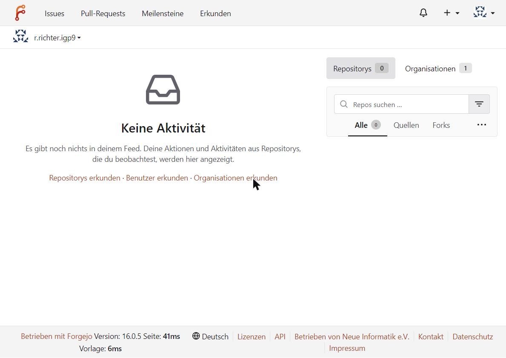
Bild 6: Die Übersicht direkt nach der ersten Anmeldung. Oben links unter dem Logo steht dein Benutzername.
| Element der Übersicht | Bedeutung |
|---|---|
| Logo oben links | führt von überall zurück zu dieser Übersicht |
| „Issues“, „Pull-Requests“, „Meilensteine“ | sammeln Issues, Pull-Requests und Meilensteine aus allen deinen Repositorys. Issues nutzt du im KI-Projekt, die anderen beiden erst später. |
| „Erkunden“ | zeigt Repositorys, Benutzer und Organisationen, die du sehen darfst |
| Glocke | Benachrichtigungen, z. B. wenn dich jemand in einem Issue erwähnt |
| „+“ | etwas Neues erstellen, vor allem ein neues Repository (Schritt 2) |
| Profilbild mit Pfeil (oben rechts) | Menü für dein Konto |
| dein Benutzername (unter dem Logo) | Dein Benutzername wird automatisch vergeben. Merke ihn dir: Wer dich später in ein Gruppenrepository einladen will, braucht ihn. |
| „Repositorys“ / „Organisationen“ (rechts) | deine Repositorys mit Suchfeld bzw. die Organisation deiner Schule. In der Organisation sind die Klassen und Kurse als Teams angelegt. |
Am Schulrechner meldest du dich am Ende der Stunde ab (Menü unter deinem Profilbild) und schließt den Browser, damit niemand nach dir in deinem Konto weiterarbeitet.
Schritt 2: Dein Repository anlegen
- Klicke oben rechts auf „+“ und im Menü auf „Neues Repository“. Die beiden anderen Einträge brauchst du nicht: „Neue Migration“ übernimmt ein Repository von einem anderen Server, „Neue Organisation“ legt eine Organisation an.
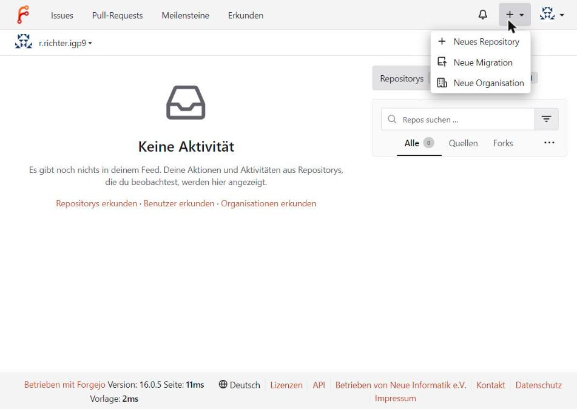
Bild 7: Das Menü hinter dem „+“. - Fülle das Formular „Neues Repository“ von oben nach unten aus. Die Tabelle unter den Bildern erklärt jedes Feld.

Bild 8: Oberer Teil des Formulars: Besitzer, Name, „privat“ und Beschreibung. 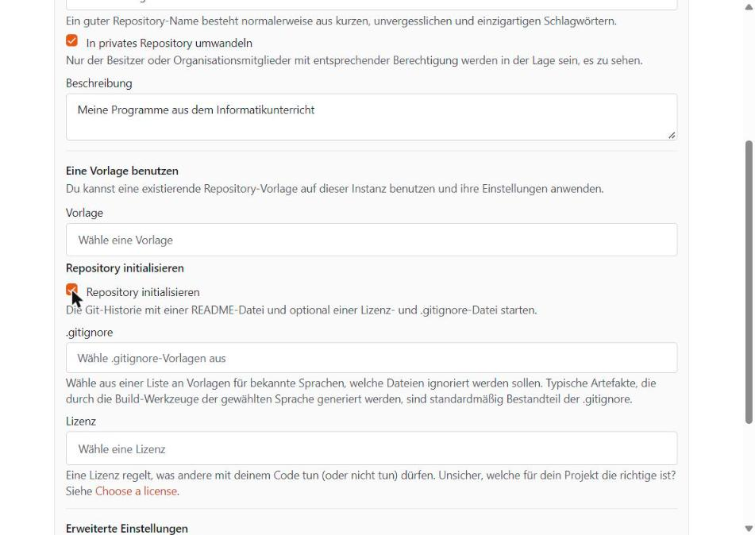
Bild 9: Nach dem Haken bei „Repository initialisieren“ erscheinen die Felder „.gitignore“ und „Lizenz“. 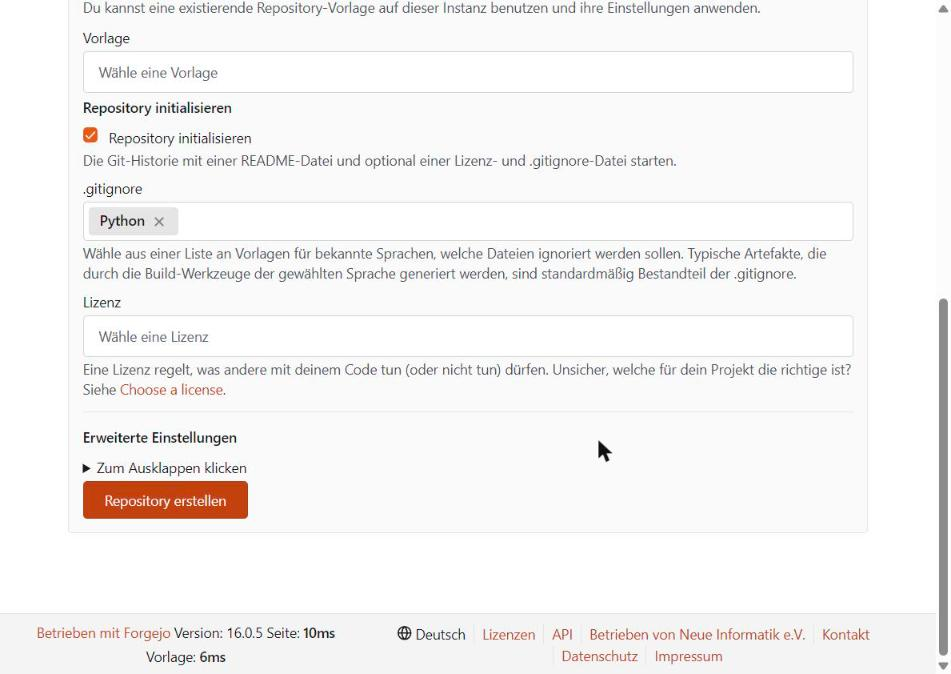
Bild 10: Unterer Teil: „.gitignore“ mit der Vorlage „Python“, „Lizenz“ leer, dann „Repository erstellen“.
| Feld | Was du einträgst | Erklärung |
|---|---|---|
| Besitzer | dein Benutzername (ist vorausgewählt) | Wem das Repository gehört. Lehrkräfte können hier auch die Organisation der Schule wählen. Für dein eigenes Repository bleibt dein Benutzername stehen. |
| Repository-Name | informatik-11 | Erscheint in der Adresse, z. B. git.inf7.eu/dein-benutzername/informatik-11. Nimm Kleinbuchstaben, Ziffern und Bindestriche, keine Leerzeichen und keine Umlaute. |
| In privates Repository umwandeln | immer ankreuzen | „Nur der Besitzer oder Organisationsmitglieder mit entsprechender Berechtigung werden in der Lage sein, es zu sehen.“ Ohne Haken wäre dein Repository für andere sichtbar. |
| Beschreibung | ein Satz, z. B. „Meine Programme aus dem Informatikunterricht“ | Steht oben auf der Repository-Seite und landet beim Initialisieren auch in der README. |
| Eine Vorlage benutzen – Vorlage | leer lassen | Damit könnte man ein vorhandenes Vorlage-Repository kopieren. Brauchst du nur, wenn deine Lehrkraft es ausdrücklich sagt. |
| Repository initialisieren | ankreuzen | „Die Git-Historie mit einer README-Datei und optional einer Lizenz- und .gitignore-Datei starten.“ Es entsteht sofort ein erster Commit („Initial commit“). Ohne den Haken bekommst du ein leeres Repository ohne Commit, mit dem die Arbeit im Browser umständlicher ist. |
| .gitignore | „Python“ auswählen | Legt eine Liste von Dateien an, die Git ignorieren soll, z. B. automatisch erzeugte Python-Dateien. Sie wirkt vor allem, wenn du später mit Git auf einem eigenen Rechner arbeitest. Beim Hochladen im Browser achtest du selbst darauf, nur deine eigenen Dateien hochzuladen. |
| Lizenz | leer lassen | Eine Lizenz regelt, was andere mit deinem Code tun dürfen. Bei einem privaten Schul-Repository ist keine nötig. Der Verweis „Choose a license“ führt zu einer englischen Erklärseite. |
| Erweiterte Einstellungen | zugeklappt lassen | Hier musst du nichts ändern. |
| Repository erstellen | klicken | legt das Repository an und öffnet es |
Schritt 3: Die Repository-Seite kennenlernen
Nach dem Erstellen siehst du die Startseite deines Repositorys. Sie enthält schon zwei Dateien – .gitignore und README.md – und einen Commit „Initial commit“. Diese Seite ist dein Ausgangspunkt für alles Weitere.

Von oben nach unten:
| Bereich | Element | Bedeutung |
|---|---|---|
| Kopf | „Besitzer / Name“ und Etikett „Privat“ | Wem das Repository gehört und wie es heißt. Steht dort nicht „Privat“, ist dein Repository öffentlich (siehe Häufige Fehler). |
| RSS-Symbol | Neuigkeiten des Repositorys als Feed abonnieren – brauchst du nicht | |
| „Beobachten“ mit Zahl | Wer ein Repository beobachtet, wird über Änderungen benachrichtigt. Die 1 bist du selbst. | |
| „Favorisieren“ mit Zahl | ein Stern als Lesezeichen | |
| „Fork“ mit Zahl | Ein Fork ist eine Kopie eines fremden Repositorys im eigenen Konto. Brauchst du nicht. | |
| Reiter | „Code“ | die Dateien – hier arbeitest du fast immer |
| „Issues“ | Aufgaben, Ideen und Fehlermeldungen als Liste; nutzt du im KI-Projekt | |
| „Pull-Requests“ | Änderungsvorschläge aus einem anderen Branch; erst im Lernbereich 5 | |
| „Projekte“ | Boards zur Planung, z. B. ein Kanban-Board; nutzt du im KI-Projekt | |
| „Releases“ | veröffentlichte, benannte Versionen eines Programms – brauchst du nicht | |
| „Pakete“ | fertig gebaute Softwarepakete – brauchst du nicht | |
| „Wiki“ | zusätzliche Dokumentationsseiten – brauchst du nicht, deine Beschreibung steht in der README | |
| „Aktivität“ | Überblick, was in letzter Zeit im Repository passiert ist | |
| „Aktionen“ | automatische Abläufe, z. B. Tests bei jedem Commit – brauchst du nicht | |
| „…“ | weitere Einträge, u. a. die Einstellungen des Repositorys (Schritt 10) | |
| Beschreibung | Text unter den Reitern | die Beschreibung aus dem Formular |
| „Themen verwalten“ | Schlagwörter vergeben – brauchst du nicht | |
| Leiste | „1 Commit“ | Anzahl der Commits. Ein Klick öffnet die Commit-Liste (Schritt 8). |
| „1 Branch“ | Anzahl der Branches; bei dir bleibt es bei main | |
| „0 Tags“ | Tags sind feste Namen für einzelne Commits, z. B. „v1.0“ – brauchst du nicht | |
| Größe, z. B. „2,7 KiB“ | Speicherplatz des Repositorys | |
| Werkzeugzeile | „main ▾“ | Branch-Auswahl. Hier steht, welchen Stand du gerade ansiehst. |
| Symbol mit zwei Pfeilen | Branches vergleichen bzw. Pull-Request starten – erst im Lernbereich 5 | |
| „Datei suchen“ | eine Datei über ihren Namen finden | |
| „Datei hinzufügen ▾“ | „Neue Datei“, „Datei hochladen“, „Patch anwenden“ (Schritt 4) | |
| „HTTPS | SSH | Adresse | Kopieren | …“ | Klon-Adresse für Git auf einem eigenen Rechner und das Menü zum Herunterladen (Schritt 9) | |
| Suche | „Code durchsuchen …“ | sucht im Inhalt der Dateien, z. B. nach einem Funktionsnamen |
| Letzter Commit | Autor, gekürzte SHA, Nachricht, Zeit | Der neueste Commit des Repositorys. Ein Klick auf die SHA zeigt, was in diesem Commit geändert wurde (Schritt 6). |
| Dateiliste | Dateiname und Nachricht | Neben jeder Datei steht die Nachricht des Commits, der sie zuletzt geändert hat, und wann das war. |
| README | „README.md“ mit Stift | Der Inhalt der README wird automatisch angezeigt. Mit dem Stift bearbeitest du sie (Schritt 7). |
Schritt 4: Eine Datei hochladen und committen
Vorbereitung: Speichere dein Programm in Thonny als .py-Datei, bzw. lade dein Notebook in JupyterLite herunter (Rechtsklick auf die Datei → Download). Gib der Datei einen klaren Namen ohne Leerzeichen und Umlaute, z. B. sortieren.py. Teste das Programm, bevor du es hochlädst.
- Menü öffnen: Klicke in deinem Repository auf „Datei hinzufügen ▾“. Im Menü stehen:
- „Neue Datei“ – eine Datei direkt im Browser schreiben (Schritt 7),
- „Datei hochladen“ – eine fertige Datei von deinem Rechner hochladen; das nimmst du jetzt,
- „Patch anwenden“ – Änderungen im Diff-Format einspielen; brauchst du nicht.

Bild 12: Das Menü „Datei hinzufügen“. - Ziel wählen: Oben steht eine Pfadzeile „
informatik-11 /[Verzeichnis erstellen …]“. Lässt du das Feld leer, landet die Datei im obersten Ordner. Trägst du z. B.wochenuebungenein, landet sie im Ordnerwochenuebungen/; gibt es ihn noch nicht, wird er angelegt. Mit „oder Abbrechen“ verlässt du die Seite, ohne etwas zu ändern. - Datei auswählen: Ziehe die Datei in das gestrichelte Feld „Dateien zum Hochladen hier ablegen oder klicken.“ oder klicke hinein und wähle sie aus. Danach erscheint eine Kachel mit Größe und Dateinamen. Mit „Datei entfernen“ nimmst du eine falsch gewählte Datei wieder heraus. „Copy link“ brauchst du nicht. Du kannst auch mehrere Dateien auf einmal hochladen; sie landen dann in einem Commit.
- Commit-Nachricht schreiben: Darunter steht der Kasten „Änderungen committen“. In die erste Zeile (Kurzbeschreibung) schreibst du deine Commit-Nachricht. Dort steht anfangs nur grau ein Vorschlag wie „Dateien nach … hochladen“ – der sagt nichts darüber aus, was du geändert hast. Schreib immer deine eigene Nachricht (siehe Gute Commit-Nachrichten).

Bild 13: Datei sortieren.pyist ausgewählt, die Commit-Nachricht enthält Version und Messwerte (Beispielwerte). - Optionen prüfen und auf „Änderungen committen“ klicken. Was die übrigen Felder bedeuten, steht in der Tabelle.

Bild 14: Alle Optionen des Kastens „Änderungen committen“. Ausgewählt ist „Direkt in den Branch ‚main‘ einchecken.“ – so bleibt es.
| Feld bzw. Option | Was du tust | Erklärung |
|---|---|---|
| erste Zeile (Kurzbeschreibung) | eigene Commit-Nachricht eintragen | Das ist die Commit-Nachricht, die später in allen Listen erscheint. |
| „Eine ausführlichere (optionale) Beschreibung hinzufügen …“ | bei Bedarf ausfüllen | Platz für Einzelheiten, z. B. mit welchen Daten gemessen wurde oder welche Testfälle du geprüft hast. Erscheint, wenn man den Commit öffnet. |
| „Am Ende der Commit-Nachricht einen ‚Signed-off-by‘-Anhang vom Committer hinzufügen.“ | nicht ankreuzen | Hängt eine Zeile mit deinem Namen an. In manchen Open-Source-Projekten bestätigt man damit, dass man den Beitrag einreichen darf. Für uns ohne Bedeutung. |
| „Direkt in den Branch ‚main‘ einchecken.“ | ausgewählt lassen | Der Commit landet sofort im Hauptbranch main. Das ist für dich immer richtig. |
| „Einen neuen Branch für diesen Commit erstellen und einen Pull-Request starten.“ | nicht wählen | Dann landet die Änderung in einem neuen Nebenzweig, und ein Pull-Request (ein Antrag, die Änderung nach main zu übernehmen) wird begonnen. Das ist für Teams gedacht, die Änderungen erst prüfen; das lernst du im Lernbereich 5. |
| „Commit-E-Mail“ | nicht ändern | Ist automatisch mit einer Adresse der Form dein-benutzername@noreply.git.inf7.eu gefüllt. „noreply“ bedeutet: keine echte Postfachadresse. So steht deine echte E-Mail-Adresse nicht in jedem Commit. |
| „Änderungen committen“ / „Abbrechen“ | committen | erzeugt den Commit bzw. verwirft alles |
- Ergebnis kontrollieren: Du landest wieder auf der Repository-Seite. Die neue Datei steht in der Liste, daneben deine Commit-Nachricht, und oben steht dein Commit mit einer neuen SHA.
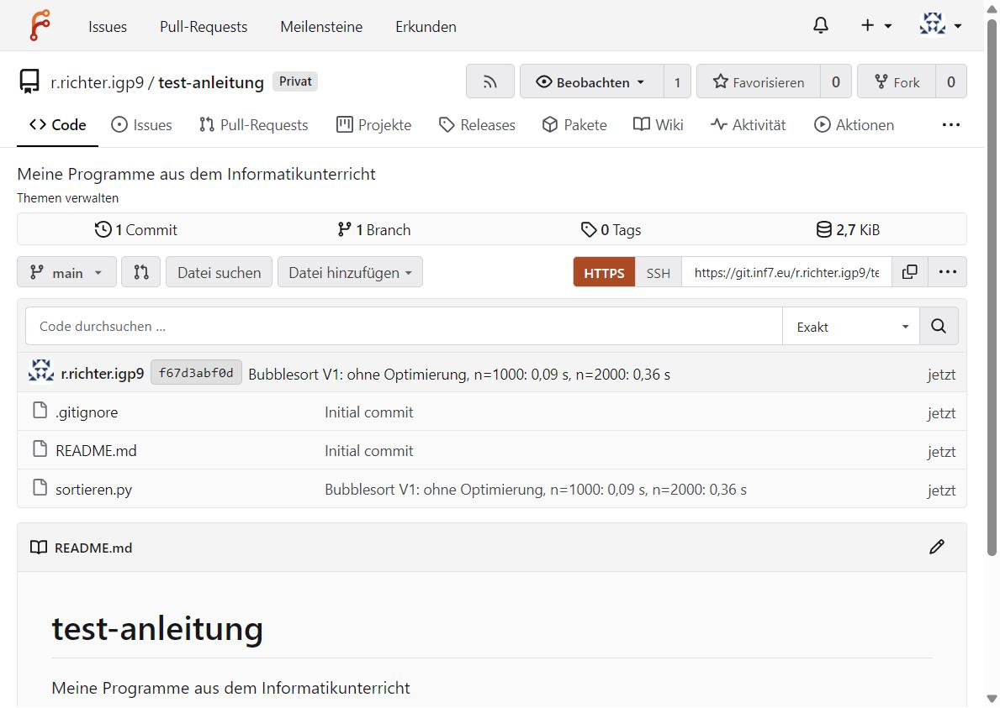
Bild 15: Nach dem Commit: sortieren.pyist da, neben der Datei steht die Commit-Nachricht.Prüfe nach jedem Commit kurz die Commit-Liste (Klick auf „… Commits“). Beim Erstellen dieser Anleitung kam ein Commit einmal nicht an. Steht dein Commit nicht in der Liste, wiederhole das Hochladen.
Schritt 5: Eine Datei ansehen – Originalformat, Permalink, Blame, Verlauf
Klicke in der Dateiliste auf einen Dateinamen. Du siehst den Inhalt mit Zeilennummern und farbiger Syntaxhervorhebung.
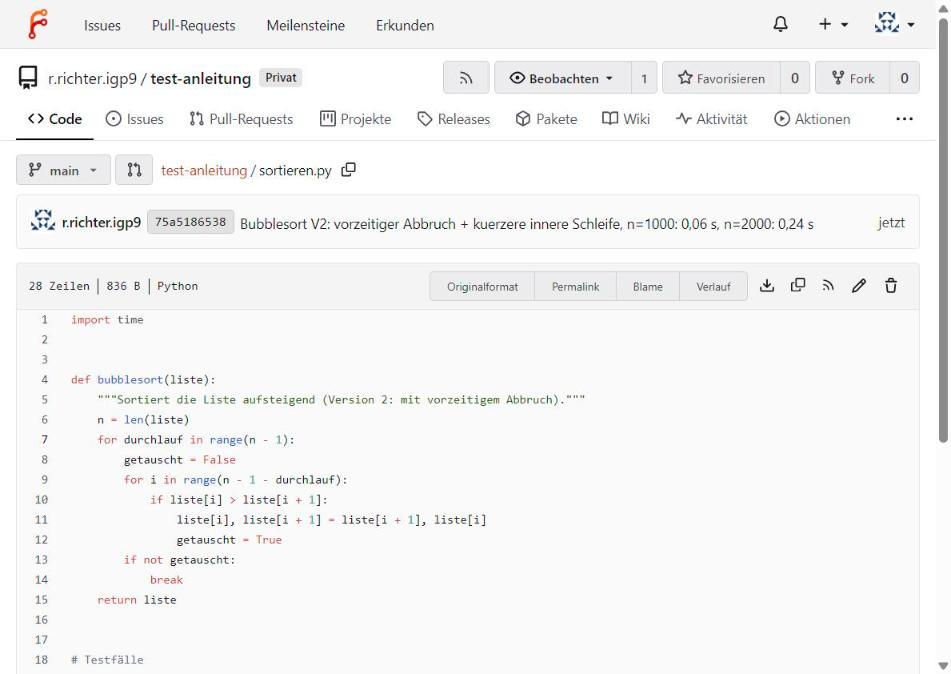
| Element | Bedeutung |
|---|---|
| „test-anleitung / sortieren.py“ mit Kopier-Symbol | der Pfad der Datei; das Symbol kopiert ihn |
| Commit-Zeile | der letzte Commit, der diese Datei geändert hat |
| „28 Zeilen | 836 B | Python“ | Länge, Größe in Byte und erkannte Sprache |
| „Originalformat“ | zeigt die reine Datei ohne Forgejo-Rahmen. Praktisch zum Kopieren oder Speichern. |
| „Permalink“ | ein fester Link auf genau diese Version der Datei. Er zeigt auch später noch diesen Stand, selbst wenn die Datei inzwischen geändert wurde. |
| „Blame“ | zeigt für jede Zeile, in welchem Commit und von wem sie zuletzt geändert wurde (engl. to blame: verantwortlich machen). Im Team sehr nützlich. |
| „Verlauf“ | alle Commits, die diese Datei verändert haben (Bild 17) |
| Pfeil nach unten | die Datei herunterladen |
| zwei Rechtecke | den ganzen Inhalt in die Zwischenablage kopieren |
| RSS-Symbol | Änderungen dieser Datei als Feed – brauchst du nicht |
| Stift | die Datei im Browser bearbeiten (Schritt 7) |
| Mülleimer | die Datei löschen. Auch das ist ein Commit: Die Datei verschwindet aus dem aktuellen Stand, bleibt aber in der Historie. |
Ein Klick auf „Verlauf“ zeigt die Historie dieser einen Datei:

sortieren.py. Oben steht „3 Commits“ (das ganze Repository), die Liste zeigt nur die zwei Commits, die diese Datei geändert haben.Die Spalten heißen Autor, SHA1 (die gekürzte Kennung des Commits), Nachricht und Datum. Rechts in jeder Zeile stehen kleine Symbole; fährst du mit der Maus darüber, erscheint eine Erklärung. Das erste kopiert die SHA („SHA kopieren“), das Symbol „An diesem Punkt im Verlauf anzeigen“ lernst du in Schritt 8 kennen. Die Schaltfläche „Commit-Graph“ zeigt die Commits als Grafik; das ist erst bei mehreren Branches interessant.
Schritt 6: Versionen vergleichen
Klicke in einer Commit-Liste oder im Verlauf auf eine SHA. Forgejo zeigt dann, was dieser Commit gegenüber seinem Vorgänger geändert hat.
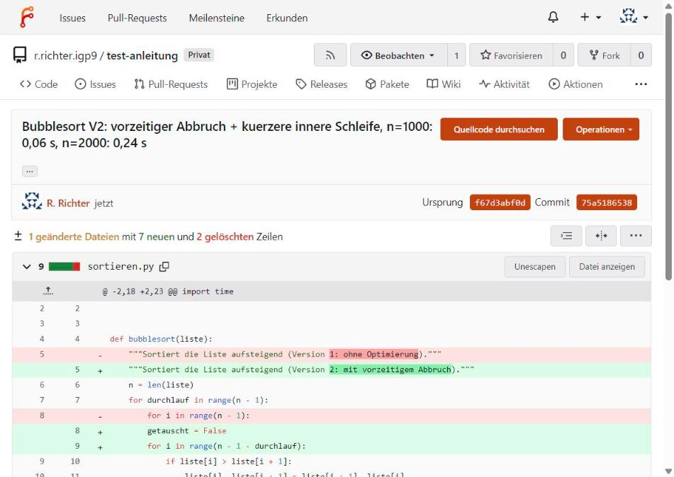
| Element | Bedeutung |
|---|---|
| Titel | die Commit-Nachricht |
| „Quellcode durchsuchen“ | öffnet das ganze Repository in genau diesem Stand |
| „Operationen ▾“ | weitere Git-Funktionen für Fortgeschrittene – brauchst du nicht |
| Autor und Zeit | wer den Commit wann erzeugt hat |
| „Ursprung f67d3abf0d“ | der Vorgänger-Commit, mit dem verglichen wird (anklickbar) |
| „Commit 75a5186538“ | die Kennung dieses Commits |
| „1 geänderte Dateien mit 7 neuen und 2 gelöschten Zeilen“ | die Zusammenfassung des Diffs |
| „9“, grün-roter Balken, Dateiname | je Datei: Zahl der geänderten Zeilen (7 + 2 = 9) und ihr Verhältnis als Balken |
| „Unescapen“ | stellt bestimmte Sonderzeichen anders dar; brauchst du selten |
| „Datei anzeigen“ | zeigt die ganze Datei in diesem Stand |
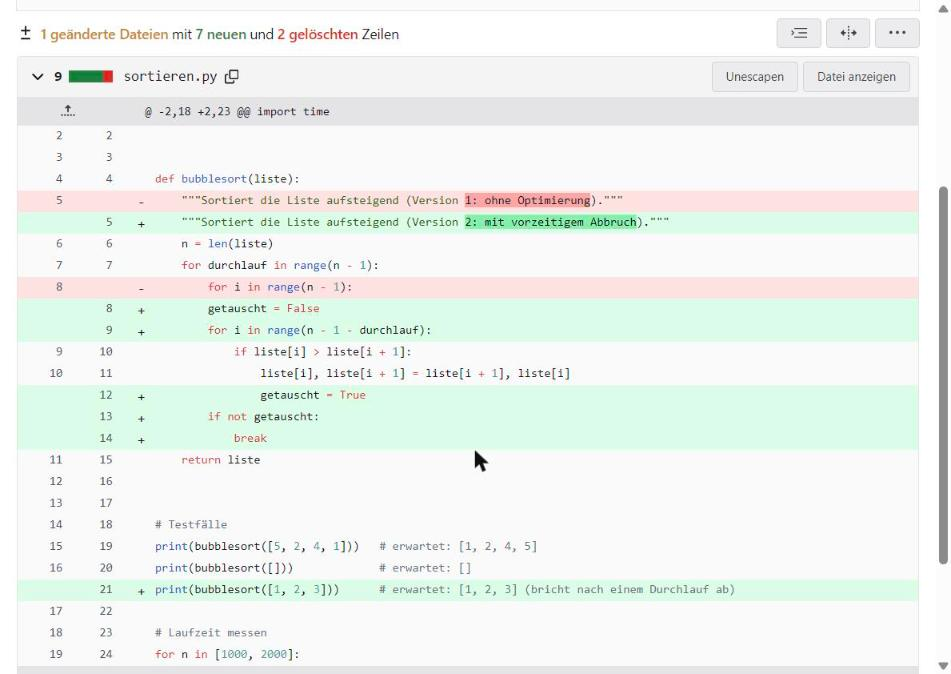
So liest du den Diff in Bild 19:
- Zwei Spalten mit Zeilennummern: links die Nummer in der alten Fassung, rechts in der neuen. Unveränderte Zeilen (weiß) haben beide Nummern, z. B. 6 und 6.
- Rot mit
-und nur linker Nummer: Diese Zeile gab es nur in der alten Fassung. Grün mit+und nur rechter Nummer: Diese Zeile ist neu. Innerhalb einer geänderten Zeile sind die geänderten Wörter zusätzlich kräftig markiert, z. B. „1: ohne Optimierung“ → „2: mit vorzeitigem Abbruch“. - Kopfzeile
@@ -2,18 +2,23 @@ import time: Der gezeigte Ausschnitt (ein „Hunk“) beginnt in der alten und in der neuen Fassung bei Zeile 2. Er umfasst alt 18 und neu 23 Zeilen. Probe: 18 − 2 gelöschte + 7 neue = 23. Dahinter zeigt Forgejo zur Orientierung eine Zeile, die vor dem Ausschnitt steht. - Was wurde inhaltlich geändert? Die alte Zeile 8
for i in range(n - 1):wurde ersetzt durchgetauscht = Falseund die kürzere innere Schleifefor i in range(n - 1 - durchlauf):. Neu sind außerdem die Zeilen 12 bis 14 (vorzeitiger Abbruch) und ein weiterer Testfall in Zeile 21. - Über die kleinen Symbole rechts über dem Vergleich lässt sich die Darstellung umschalten (z. B. alt und neu nebeneinander). Probiere es aus.
Ein Commit wird immer mit seinem direkten Vorgänger verglichen. Willst du Version 1 mit Version 3 vergleichen, sieh dir die Commits dazwischen nacheinander an – deshalb lohnt es sich, jede Version einzeln zu committen.
Schritt 7: Im Browser bearbeiten – die README in Markdown
Kleine Änderungen machst du direkt im Browser, z. B. an der README. Klicke dazu in der Dateiansicht oder unter der angezeigten README auf den Stift. Es öffnet sich der Web-Editor.
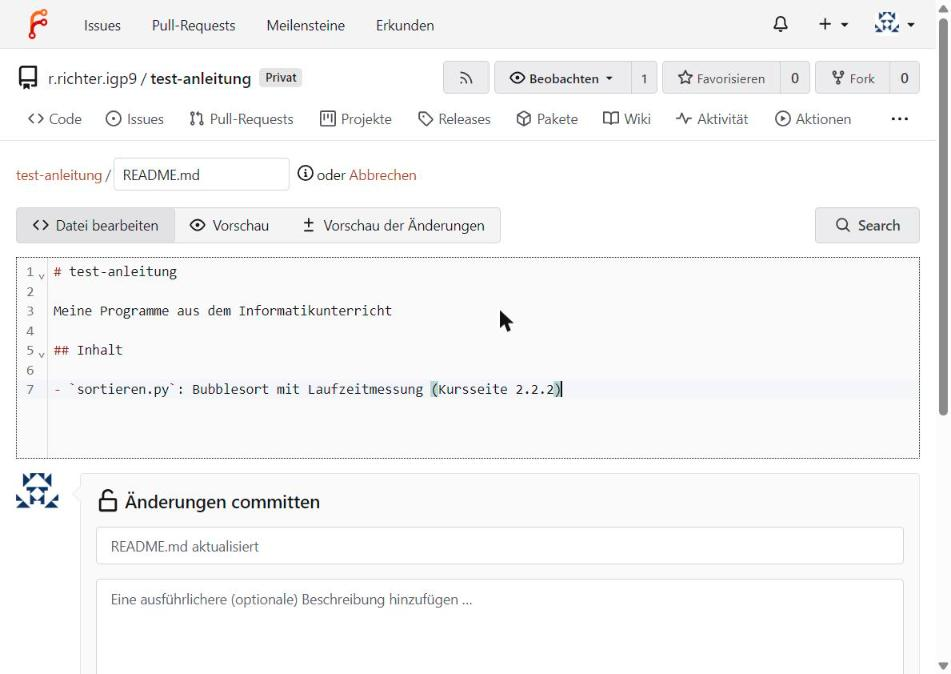
- Oben: Pfad und Dateiname (
README.md). Den Namen lässt du unverändert. „oder Abbrechen“ verwirft alle Änderungen. - Reiter „Datei bearbeiten“: Hier schreibst du. Die Schaltfläche „Search“ sucht im Text.
- Reiter „Vorschau“: zeigt, wie der Markdown-Text später aussieht (Bild 21).
- Reiter „Vorschau der Änderungen“: zeigt den Diff, bevor du committest (Bild 22). Das ist deine letzte Kontrolle.
- Unten: derselbe Kasten „Änderungen committen“ wie beim Hochladen. Forgejo schlägt „README.md aktualisiert“ vor – besser ist eine eigene Nachricht, z. B. „README: Inhaltsverzeichnis ergänzt“.
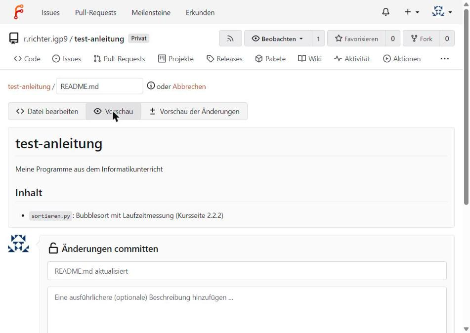
# wird eine Überschrift, aus - ein Aufzählungspunkt, aus `sortieren.py` Code-Schrift.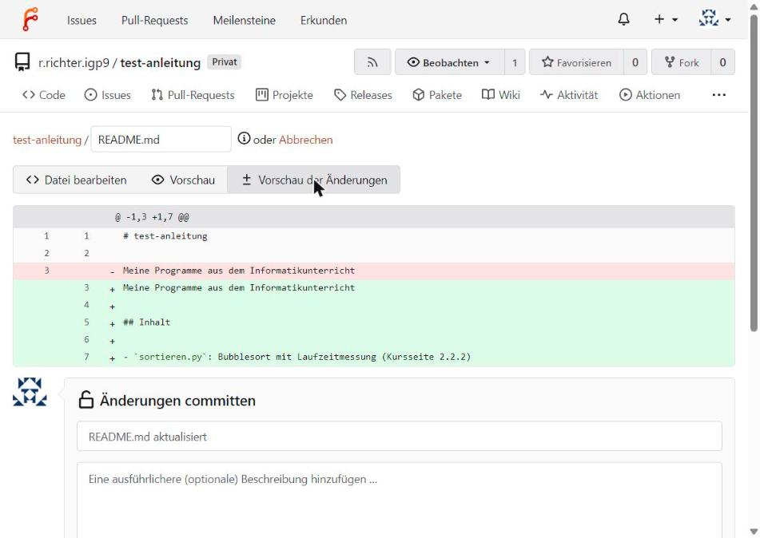
Warum ist Zeile 3 in Bild 22 rot und grün? In der alten Datei stand nach der letzten Zeile kein Zeilenumbruch. Durch das Weiterschreiben bekommt diese Zeile einen. Git vergleicht ganze Zeilen einschließlich des Zeilenendes, deshalb gilt sie als geändert. Das ist harmlos.
Web-Editor oder Thonny? Im Web-Editor kannst du Programme nicht ausführen. Kleine Korrekturen (README, Kommentare, Tippfehler) machst du im Browser. Größere Änderungen am Code machst du in Thonny bzw. JupyterLite, testest sie dort und lädst die Datei mit demselben Namen neu hoch (Schritt 4). Jede Änderung schließt du mit einem Commit und einer neuen Nachricht ab.
Neue Datei im Browser: Über „Datei hinzufügen“ → „Neue Datei“ öffnet sich derselbe Editor mit leerem Namensfeld. Gibst du im Namen einen Ordner mit Schrägstrich an, z. B. wochenuebungen/kw44_sortieren.py, landet die Datei in diesem Ordner.
Markdown für die README
| Du schreibst | Ergebnis |
|---|---|
# Überschrift, ## Unterüberschrift | Überschriften der Ebene 1 bzw. 2 |
**wichtig**, *betont* | wichtig, betont |
- Punkt bzw. 1. Punkt | Aufzählung bzw. nummerierte Liste |
`sortiere(liste)` | Code im Text: sortiere(liste) |
[Kursseite](https://…) | Verweis mit dem Text „Kursseite“ |
Tabelle mit | und einer Trennzeile |---|---| | Tabelle |
| eine Leerzeile | neuer Absatz. Ohne Leerzeile werden Zeilen oft zu einem Absatz zusammengezogen. |
# informatik-11
Meine Programme aus dem Leistungskurs Informatik, Klasse 11.
## Inhalt
- `wochenuebungen/` – Lösungen der Wochenübungen
- `sortierexperiment.py` – Laufzeitexperiment (siehe Commit-Historie)
## Hinweise
Alle Programme laufen in Thonny oder im JupyterLite der Schule.Schritt 8: Alte Stände ansehen und zurückholen
Klicke auf der Repository-Seite auf „… Commits“. Du siehst die Commit-Liste des ganzen Repositorys, der neueste Commit steht oben. Mit dem Feld „Commits suchen …“ findest du Commits über Wörter aus der Nachricht; „Dieser Branch“ bedeutet, dass nur in main gesucht wird.
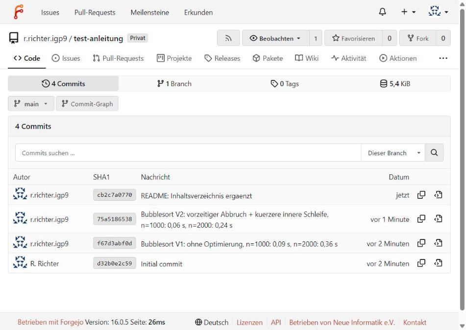
Rechts neben jedem Commit stehen zwei Symbole: „SHA kopieren“ und „An diesem Punkt im Verlauf anzeigen“.

Ein Klick darauf zeigt dir das ganze Repository so, wie es nach diesem Commit war:
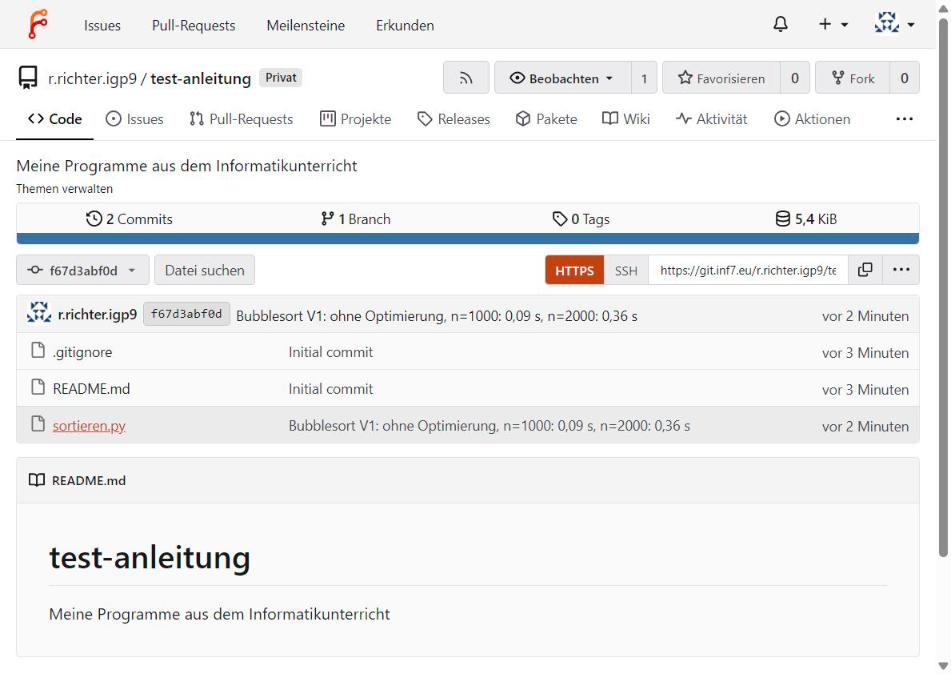
f67d3abf0d.Woran du erkennst, dass du einen alten Stand ansiehst:
- In der Branch-Auswahl steht die SHA statt
main. - Die Leiste zeigt nur die Commits bis zu diesem Stand (hier „2 Commits“).
- Dateiliste und README zeigen den alten Inhalt (die README hat hier noch kein Inhaltsverzeichnis).
- Die Schaltfläche „Datei hinzufügen“ fehlt: Einen alten Stand kann man ansehen, aber nicht verändern.
Klickst du jetzt auf sortieren.py, siehst du die Datei in Version 1. Mit „Originalformat“ öffnest du sie als reine Datei, mit dem Pfeil lädst du sie herunter. Zurück zum aktuellen Stand kommst du, indem du in der Branch-Auswahl wieder main wählst.
Eine alte Fassung zurückholen
Git dreht die Historie nicht zurück. Du holst den alten Inhalt und speicherst ihn als neuen Commit. Dafür gibt es zwei Wege:
| Weg A: herunterladen und neu hochladen | Weg B: Inhalt kopieren und im Editor einfügen |
|---|---|
|
|
Schritt 9: Herunterladen und Klonen
Rechts in der Werkzeugzeile der Repository-Seite stehen „HTTPS“, „SSH“, die Klon-Adresse, ein Kopier-Symbol und das Menü „…“.
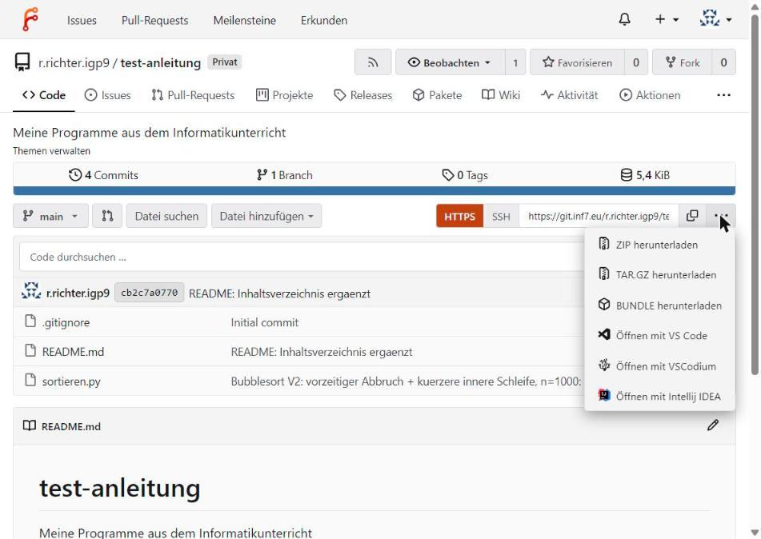
| Eintrag | Bedeutung |
|---|---|
| „ZIP herunterladen“ | alle Dateien im aktuellen Stand als ZIP-Archiv, z. B. als Sicherung am Schuljahresende. Die Historie ist darin nicht enthalten. |
| „TAR.GZ herunterladen“ | dasselbe in einem anderen Archivformat (unter Linux üblich) |
| „BUNDLE herunterladen“ | ein Git-Paket mit der vollständigen Historie; nur sinnvoll, wenn Git auf dem Rechner installiert ist |
| „Öffnen mit VS Code“, „… VSCodium“, „… IntelliJ IDEA“ | öffnet das Repository in einem dieser Programme, wenn es installiert ist – brauchst du nicht |
| „HTTPS“ / „SSH“ + Adresse + Kopieren | Die Adresse braucht man, um das Repository mit Git auf einem eigenen Rechner zu klonen (vollständig zu kopieren, mit Historie). Das lernst du im Lernbereich 5. |
Eine einzelne Datei lädst du in der Dateiansicht über den Pfeil herunter (Schritt 5).
Schritt 10: Die Lehrkraft einladen (falls verlangt)
Dein Repository ist privat. Soll deine Lehrkraft hineinsehen, lädst du sie als Mitarbeiter ein – aber nur, wenn sie dich darum bittet:
- Reiter „…“ → Einstellungen → links „Mitarbeiter“.
- Im Feld „Benutzer suchen …“ den Benutzernamen der Lehrkraft eingeben und aus der Liste auswählen.
- „Mitarbeiter hinzufügen“ klicken. Danach lassen sich die Rechte in der Regel in dieser Liste einstellen; zum Ansehen genügen Leserechte.
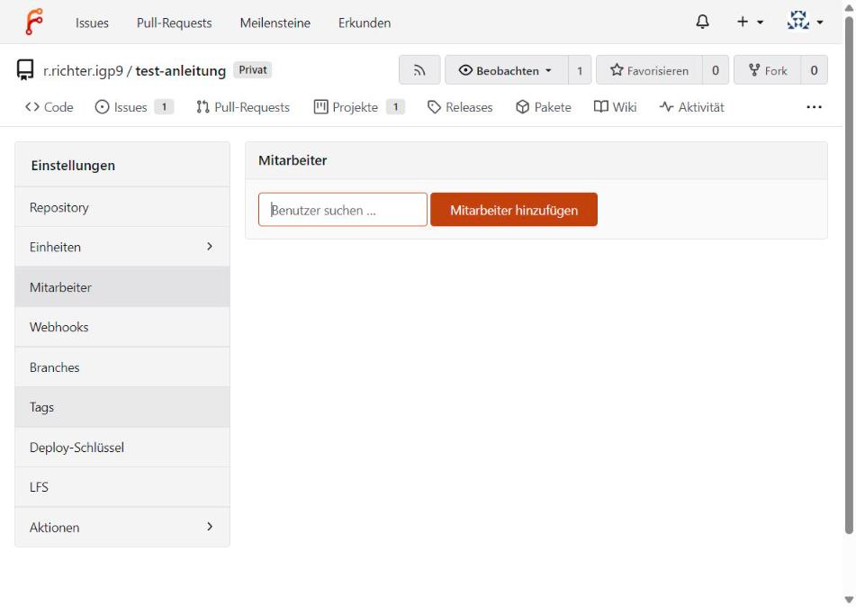
Regeln für gute Commit-Nachrichten
| schwach | besser |
|---|---|
| „Dateien nach … hochladen“ (Vorschlag übernommen) | „Bubblesort V1: ohne Optimierung, n=1000: 0,09 s, n=2000: 0,36 s“ |
| „README.md aktualisiert“ (Vorschlag übernommen) | „README: Inhaltsverzeichnis ergänzt“ |
| „neue Version“ | „Bubblesort V2: vorzeitiger Abbruch + kürzere innere Schleife, n=1000: 0,06 s, n=2000: 0,24 s“ |
Umlaute sind in Commit-Nachrichten erlaubt. Die Messwerte in der Tabelle sind Beispielwerte.
Häufige Fehler und Fragen
| Problem | Ursache und Lösung |
|---|---|
| Ich habe meinen Benutzernamen und mein Passwort in die Felder auf git.inf7.eu eingegeben – es klappt nicht. | Dort hast du kein Passwort. Nimm „Anmelden mit inf7.eu“ → „Continue with beste.schule“ (Schritt 1). |
| Bei der Erlaubnisanfrage habe ich „Abbrechen“ geklickt. | Dann bist du nicht angemeldet. Melde dich neu an und klicke auf „Erlauben“. |
| Neben dem Namen meines Repositorys steht nicht „Privat“. | Du hast den Haken vergessen. Die Sichtbarkeit lässt sich in den Einstellungen des Repositorys (Reiter „…“ → Einstellungen, Bereich „Repository“) nachträglich ändern. Sag im Zweifel deiner Lehrkraft Bescheid. |
| Mein Repository ist leer, es gibt keine README. | „Repository initialisieren“ war nicht angekreuzt. Lege am einfachsten ein neues Repository richtig an und frage deine Lehrkraft, was mit dem leeren geschehen soll. |
| Mein Commit steht nicht in der Commit-Liste. | Seite neu laden und noch einmal nachsehen. Fehlt er weiter, das Hochladen bzw. Bearbeiten wiederholen. |
Nach dem Hochladen habe ich sortieren.py und sortieren(1).py. | Die Datei hatte einen anderen Namen. Lösche die überzählige Datei (Mülleimer, mit Commit-Nachricht) und lade die richtige Datei mit dem richtigen Namen hoch. |
| Ich habe „Einen neuen Branch … erstellen und einen Pull-Request starten“ gewählt. | Deine Änderung liegt dann nicht in main. Brich den Pull-Request ab, wechsle in der Branch-Auswahl zu main und mache die Änderung dort noch einmal mit „Direkt in den Branch ‚main‘ einchecken“. Frage bei Unklarheit deine Lehrkraft. |
| Die Schaltfläche „Datei hinzufügen“ ist verschwunden. | Du siehst einen alten Stand (oben steht eine SHA statt main). Wähle in der Branch-Auswahl main. |
| Im Diff ist meine letzte alte Zeile rot und grün, obwohl ich sie nicht geändert habe. | Am Dateiende fehlte ein Zeilenumbruch (Schritt 7). Harmlos. |
| In meiner Commit-Nachricht ist ein Tippfehler. | Eine Commit-Nachricht lässt sich im Browser nicht nachträglich ändern. Beim nächsten Commit besser machen. |
| Ich habe ein Passwort oder fremde Daten hochgeladen. | Sofort das Passwort ändern und der Lehrkraft Bescheid sagen. Löschen allein genügt nicht, weil die Historie den alten Stand behält. |
| Mein Programm läuft im Web-Editor nicht. | Der Web-Editor führt keine Programme aus. Teste in Thonny bzw. JupyterLite. |
Beispiele
Praxisbezug: Git in Software-Firmen und in der Wissenschaft
Alltag: Viele Textprogramme und Cloud-Speicher bieten einen „Versionsverlauf“ – das Grundprinzip ist dasselbe, nur ohne aussagekräftige Nachrichten.
Beruf: Praktisch jede Softwarefirma verwaltet ihren Code mit Git. Bevor eine Änderung übernommen wird, sieht eine Kollegin den Diff durch (Code-Review). Forschungsgruppen legen Auswertungsskripte mit Git ab, damit sich später nachvollziehen lässt, mit welcher Programmversion welche Messergebnisse entstanden sind.
Das Wichtigste
Repository (kurz Repo): ein Projektordner unter Versionsverwaltung. Er enthält die Dateien und die vollständige Geschichte aller ihrer Fassungen.
Commit: ein gespeicherter Stand aller Dateien des Repositorys, eine Art Schnappschuss. Jeder Commit hat eine eindeutige Kennung, einen Autor bzw. eine Autorin, einen Zeitpunkt und eine Commit-Nachricht, die beschreibt, was geändert wurde und warum.
Historie: die Liste aller Commits eines Repositorys bzw. einer Datei, in der Regel der neueste oben.
Diff: die Darstellung der Unterschiede zwischen zwei Fassungen. Entfernte Zeilen sind mit -, hinzugefügte mit + markiert.
Zurückholen: Ein alter Inhalt wird als neuer Commit gespeichert. Die Historie wird ergänzt, nicht zurückgedreht, deshalb geht keine Fassung verloren.
Zum Nachlesen: weitere Begriffe, gute Commits, was nicht ins Repository gehört
Kennung eines Commits: eine lange Prüfsumme aus Ziffern und Buchstaben a–f, meist gekürzt angezeigt, z. B. 3f9a2c1; Forgejo nennt sie SHA bzw. SHA1. Die Historie heißt engl. history oder log, in Forgejo „Verlauf“ bzw. die Liste „Commits“. Im Diff erscheint eine geänderte Zeile als entfernte alte und hinzugefügte neue Zeile (meist rot bzw. grün).
README: die Datei README.md im obersten Ordner. Sie beschreibt das Repository und wird auf der Startseite des Repositorys automatisch angezeigt. Sie ist in Markdown geschrieben, einer einfachen Auszeichnungssprache.
Branch (Zweig): eine Entwicklungslinie. Dein Repository hat genau einen Branch namens main, in dem alle deine Commits landen. Mehrere Branches und Pull-Requests brauchst du erst im Lernbereich 5.
.gitignore: eine Datei mit einer Liste von Datei- und Ordnernamen, die Git nicht mit verwalten soll, z. B. den Ordner __pycache__, den Python automatisch anlegt.
Gute Commits:
- Ein Commit, ein Anliegen: Eine Fehlerkorrektur und eine neue Funktion gehören in zwei Commits.
- Die erste Zeile sagt, was sich ändert, kurz und konkret (höchstens etwa 60–70 Zeichen), z. B. „Insertionsort statt Bubblesort“ statt „update“.
- Das Warum gehört dazu, wenn es nicht offensichtlich ist: „Fehler behoben: Faktor 9/5 statt 5/9“. Bei Experimenten gehören die Messwerte hinein.
- Einheitlich schreiben: z. B. immer im Präsens oder als Stichwort, immer auf Deutsch.
- Nur Funktionierendes committen oder es ausdrücklich sagen („unfertig: merge fehlt noch“).
Was nicht ins Repository gehört:
- Passwörter, Zugangsdaten, Schlüssel (z. B. ein API-Schlüssel für eine KI-Schnittstelle). Wurde so etwas versehentlich committet, gilt es als bekannt: sofort ändern bzw. sperren lassen. Löschen im nächsten Commit genügt nicht, denn die alte Fassung steht weiter in der Historie.
- Personenbezogene Daten anderer Menschen: Namen und Noten von Mitschülerinnen und Mitschülern, Adresslisten, Fotos. Für Tests nimmst du ausgedachte Daten. Auch über dich selbst gehört nur das Nötigste hinein, keine Adresse und keine Telefonnummer.
- Große oder automatisch erzeugte Dateien, die sich jederzeit neu herstellen lassen, z. B. riesige Messdateien oder Ordner wie
__pycache__. - Fremde Werke, die du nicht weitergeben darfst, z. B. urheberrechtlich geschützte Bilder, Texte oder Programme anderer.
Und: Dein Repository ist immer privat (Etikett „Privat“ neben dem Namen).
Grundaufgaben
Aufgabe 2.1.8.1: Dein Repository anlegen AFB I
- Melde dich auf git.inf7.eu mit „Anmelden mit inf7.eu“ → „Continue with beste.schule“ an und lege das Repository
informatik-11an (Schritt 2). Kreuze „In privates Repository umwandeln“ und „Repository initialisieren“ an und wähle als .gitignore „Python“. - Ergänze die
README.mdim Web-Editor (Stift) um eine Überschrift, einen Satz zum Zweck des Repositorys und eine Liste der geplanten Ordner bzw. Dateien. Verwende mindestens eine Hervorhebung und einmal Code-Schreibweise mit Backticks. Prüfe im Reiter „Vorschau“, ob alles richtig dargestellt wird, und im Reiter „Vorschau der Änderungen“, was sich ändert. Ersetze den Nachrichtenvorschlag „README.md aktualisiert“ durch eine eigene Nachricht. - Kontrolliere in der Commit-Liste (Klick auf „… Commits“), dass dein Commit mit einer aussagekräftigen Nachricht entstanden ist, und notiere seine gekürzte Kennung (SHA).
Persönliche Angaben wie Adresse oder Telefonnummer gehören nicht in die README.
Aufgabe 2.1.8.2: Wochenübungs-Code einchecken AFB I–II
- Lade ein Programm aus der Wochenübung dieser Woche (oder aus einer Aufgabe der Kursseiten 2.2.2 bis 2.2.5) in deinen Ordner
wochenuebungen/hoch. Den Ordner legst du an, indem du beim Hochladen in der Pfadzeile in das Feld „Verzeichnis erstellen …“wochenuebungeneinträgst bzw. beim Anlegen einer neuen Datei den Namen mit Schrägstrich angibst, z. B.wochenuebungen/kw44_sortieren.py. - Verbessere das Programm in mindestens zwei weiteren Commits, z. B. einen Fehler beheben und eine Testtabelle als Kommentar ergänzen (Eingabe | erwartete Ausgabe | tatsächliche Ausgabe). Halte dich an die Regeln für gute Commit-Nachrichten.
- Ergänze die README um einen Verweis auf den neuen Ordner.
Das kann ich jetzt
Grau steht, was der Lehrplan verlangt, darunter, was das für dieses Thema konkret heißt. Hake einen Punkt ab, wenn er in deinem Hefter zusammengefasst ist und du ihn ohne Hilfe kannst. Wie du ihn zusammenfasst, entscheidest du selbst. Die Haken speichert nur dein Browser.
Lehrplan LB 5 Kennen des Konzepts der Versionsverwaltung bei der Softwareentwicklung